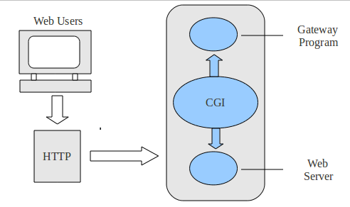
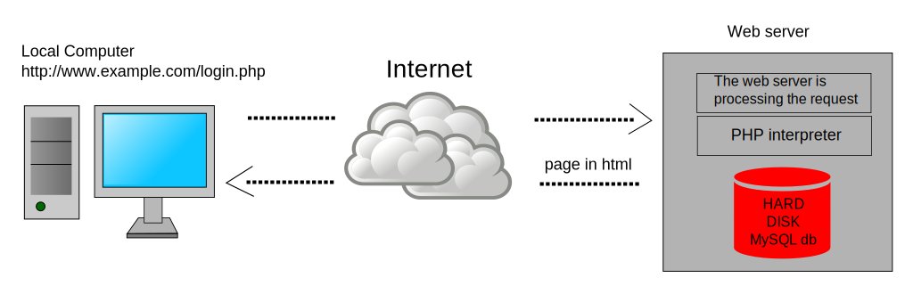

Dans la présentation précédente, on a utilisé des serveurs web pour héberger des sites statiques, dont les pages sont lues depuis le disque dur, et envoyées telles quelles aux clients.
On va aborder ici les pages, générées dynamiquement côté serveur.
La génération dynamique de pages a été rendue possible par l'apparition du standard CGI (Common Gateway Interface) en 1993.
Le principe : faire fonctionner le serveur web avec un programme externe.
Le serveur web transmet les paramètres de la requête au programme externe.
Le programme externe génère dynamiquement du contenu HTML et le renvoie au serveur web.
Le serveur web renvoie ce contenu au client.

CGI définit un "standard" pour les communications entre le serveur web et le programme externe
(Gateway Program, souvent appelé "script CGI").
On passe par un programme externe, car le serveur web n'est pas fait pour se connecter à une base de données.
Comme CGI est un standard, on peut écrire des scripts CGI dans tout langage.
Les langages C et Perl étaient largement utilisés, avant d'être supplantés par d'autres.
Parmi ceux-ci... PHP a connu un grand succès.
PHP communique avec le serveur via CGI

sudo add-apt-repository ppa:ondrej/php
sudo apt update
sudo apt install php7.2 php7.2-common php7.2-cli php7.2-fpmUn fichier à récupérer (via wget) et à copier dans le dossier de configuration de Nginx, après sauvegarde de l'original.
sudo wget https://prez.wild31.com/dl/default
sudo mv /etc/nginx/sites-available/default /etc/nginx/sites-available/default.bak
sudo cp default /etc/nginx/sites-available/
sudo service nginx reloadOn peut mélanger HTML et code PHP...
<!DOCTYPE html>
<html>
<body>
<?php echo "Hello World"; ?>
</body>
</html>hello.php :nano /var/www/html/hello.php
<?php
$title = "My online store";
$articles = [
"Desktop Computer",
"Laptop Computer",
"Smartphone"
]; ?>
<!DOCTYPE html>
<html>
<body>
<h1><?php echo $title; ?></h1>
<ul>
<?php
// Boucle sur le tableau articles
for($i = 0 ; $i < count($articles) ; $i++) {
// Concaténation en PHP (caractère . au lieu de + en JS)
echo '<li>' . $articles[$i] . '</li>';
}
?>
</ul>
</body>
</html>nano /var/www/html/store.php<?php
$title = "My search engine";
$apps = [
"Google Tasks - todolist app",
"Todoist - todolist app",
"Evernote - todolist app",
"Waze - traffic app",
"Spotify - music app",
"Deezer - music app",
"Shazam - music app"
];
// Vérifie la présence d'un paramètre ?search=XYZ dans l'URL
$isSearching = isset($_GET['search']);
// Filtre les apps en fonction de la recherche
$results = ! $isSearching
? []
: array_filter($apps, function($app) {
// Convertit le nom d'app en minuscules
$appLowerCase = strtolower($app);
// Renvoie true si le nom d'app contient le terme recherché
return strpos($appLowerCase, strtolower($_GET['search']));
});
?>
<!DOCTYPE html>
<html>
<body>
<h1><?php echo $title; ?></h1>
<form>
<input name="search" />
<p><em>Essayer "music", "todolist"</em></p>
<button type="submit">Rechercher</button>
</form>
<ul>
<?php
if($isSearching) {
// Boucle sur le tableau results
foreach($results as $app) {
// Concaténation en PHP (caractère . au lieu de + en JS)
echo '<li>' . $app . '</li>';
}
}
?>
</ul>
</body>
</html>nano /var/www/html/search.php